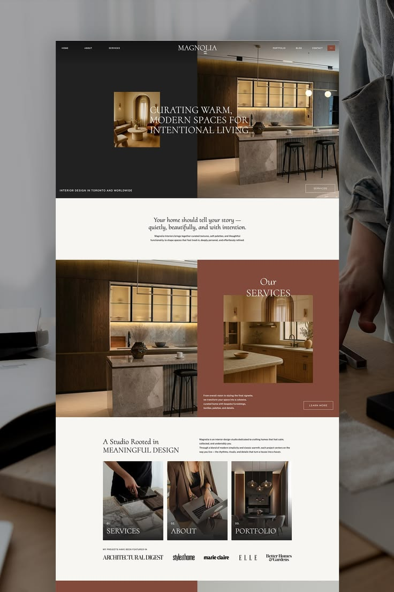
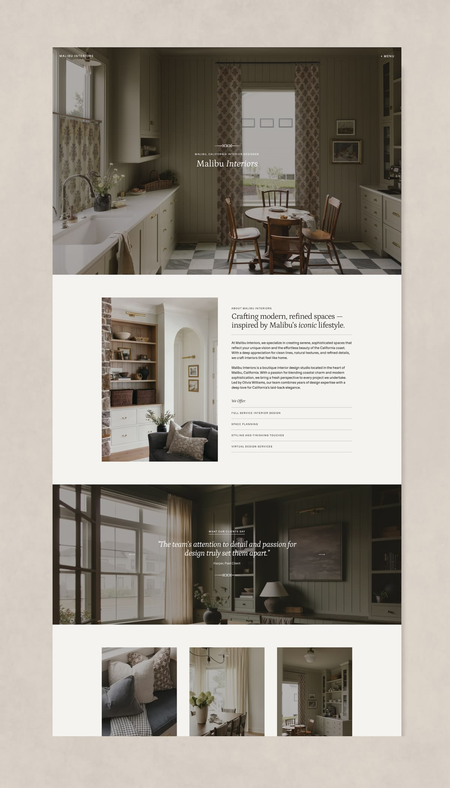
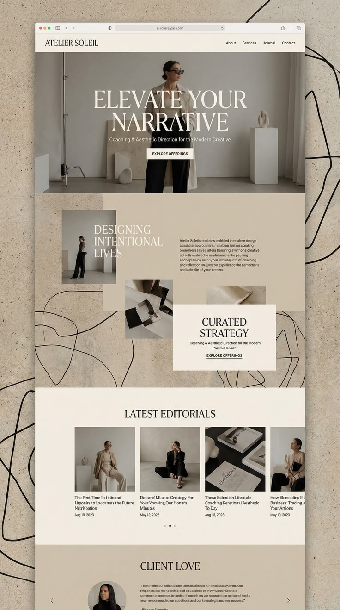

Ash Riffe Interior Architecture · Site Redesign
Everything on this page shaped the new site: what you told us in the discovery call, an audit of the current site, how the strongest interior design studios structure their sites, and the design decisions we made in response. Nothing here is decoration. Every section of the prototypes traces back to something on this page.
01
From the discovery call on June 29. These became the brief.
02
We went through ashriffeinteriordesign.com page by page. The content underneath is strong. The presentation is what's holding it back.
03
We researched conversion-focused guidance and top-performing interior design studio sites. The same structure shows up over and over: five core pages, each with a predictable set of sections that build trust in a specific order.
The front door: style, credibility, and clear paths onward.
The proof. Most visited, most critical for conversion. Quality over quantity.
Explains offers, clarifies process, and pre-qualifies clients.
People hire designers, not just imagery.
Turn interest into inquiries with minimal friction.
Not required on day one, but common on mature studio sites.
04
Where the prototypes already meet that standard, where work is planned, and where we need something from you before we can build it.
05
Three references shaped the visual language. From each we took one specific move, and left the rest.



The type system
A lasting conversation
between past & future.
Cormorant Garamond for display. Arboria for reading text. The italic carries warmth, the caps carry authority. Her positioning in one typographic move.
The palette
Paper · #F6F1E9
Ink · #1A1614
Terracotta · #C07B68
Blush · #EDD4CB
Light and neutral so the dark portfolio photos pop, per the brief. The terracotta is the peachy accent territory from the current site, deepened so it holds its own without competing with the work.
06
The whole site sits on a cream sheet inside a textured stone mat, like a matted design board. Framed hero, gallery-quiet sections, a single booking CTA at the end.
A magazine-spread layout: asymmetric hero with collaged inset, credibility numbers, a numbered project index that zig-zags down the page, dark ethos band, seven pillars.
07